# 📖 Tutorials
# * Adding a new protocol (BNEP Example)
This section guides your though adding fuzzing support to a new protocol into WDissector framework.
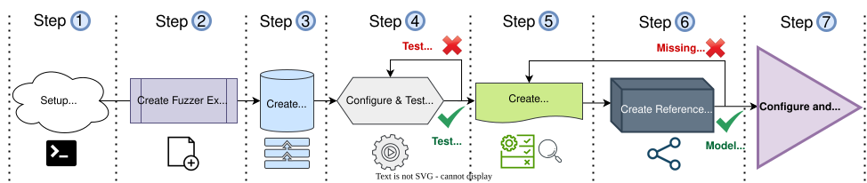
Keep in mind that you can easily add more protocols as long as (1) there is a compatible Interface Drivers that you can use to intercept communication for your protocol and (2) a Protocol Stack Program that can initiate communication using your protocol of choice.
For example, wireless protocol that relies on Bluetooth (L2CAP, SDP, RFCOMM) will use ESP32BTDriver, whereas protocols that are transported over ethernet (ICMP, IP, TCP, etc) can use either WifiRT8812AUDriver or VirtualEthernet (Work-In-Progress). For your quick reference, below is listed what protocols are associated to which interface so you can get a feeling on what interface to use for an unlisted protocol:
- ICMP, IP, TLS, DTLS, TCP, UDP, ARP, etc - The
WifiRT8812AUDrivercan be used here since all such protocols are application layer. Although such Interface Driver is inted to be used for 802.11 data link and network layer protocol, nothing stops you to create specific fuzzing and mapping ruled to target application layer protocols. The stack used for Wi-Fi is normally Hostapd (opens new window) on Linux. Currently there is a work-in-progress to add a new Interface DriverVirtualEthernetwhich would allow the host to simply intercept a Virtual Ethernet interface on Linux and thus fuzz any Ethernet wired protocol down to the MAC layer (OSI Layer 2). - L2CAP, SDP, RFCOMM, BNEP, A2DP, GATT, AVRCP, etc - The
ESP32BTDriveris intended to be used with such Bluetooth related wireless protocols.
In this tutorial, we will show how to add fuzzing for Bluetooth Personal Area Network (PAN) profile using ESP32BTDriver Interface Driver. This profile uses the Bluetooth Network Encapsulation Protocol (opens new window) (BNEP) protocol and is used to establish internet connection to connected clients over Bluetooth. The internet connection is known to be slow due to BT bitrate, but our objective here is to just fuzz the BNEP protocol, so communication speed is not as important.
# 1) Prepare the development environment
In this step, you need to make sure that you have fully compiled from source wdissector at least once following the Quick Start Guide. In short, you can run the following commands on wdissector root folder:
./requirements.sh dev
./build.sh all
# 2) Creating a fuzzer executable for your protocol
We can use another fuzzer code as a template for us and starting point for our BNEP protocol fuzzer executable. Since bt_fuzzer uses ESP32BTDriver Interface, we can simply copy src/bt_fuzzer.cpp to a new src/bt_pan_fuzzer.cpp. We also do the same for it's configuration file as follows:
# Main fuzzer code \
cp src/bt_fuzzer.cpp src/bt_pan_fuzzer.cpp && \
# Main fuzzer config file \
cp configs/bt_config.json configs/bt_pan_config.json
Next, change the name of the json configuration file and the pcap capture file that our fuzzer is going to use. Open src/bt_pan_fuzzer.cpp and change the definition CONFIG_FILE_PATH to "configs/bt_config.json" and CAPTURE_LMP_FILE to "logs/Bluetooth_PAN/capture_bluetooth.pcapng". You can use sed to do this change via terminal:
# Change config file name to bt_pan_config \
sed -i 's|bt_config.json|bt_pan_config.json|g' src/bt_pan_fuzzer.cpp && \
# Change log folder to Bluetooth_PAN \
sed -i 's|logs/Bluetooth/|logs/Bluetooth_PAN/|g' src/bt_pan_fuzzer.cpp
Then, we need to compile bt_pan_fuzzer.cpp as our new fuzzer. We will need to modify a bit its code later. For now, let's just make sure that we can compile our fuzzer within the framework by generating a fuzzer binary named bt_pan_fuzzer.
To do this, add the following at the end of the file CMakeLists.txt:
# Add this at the end of CMakeLists.txt
# Set PAN fuzzer source code files
set(BT_PAN_FUZZER_SRC src/bt_pan_fuzzer.cpp)
# Add PAN fuzzer executable
add_executable(bt_pan_fuzzer ${BT_PAN_FUZZER_SRC} libs/profiling.c)
target_link_libraries(bt_pan_fuzzer PRIVATE ${FUZZER_LIBS})
target_compile_options(bt_pan_fuzzer PRIVATE -w -O3)
target_compile_definitions(bt_pan_fuzzer PRIVATE -DFUZZ_BT)
target_precompile_headers(bt_pan_fuzzer PRIVATE src/PCHBT.hpp)
Finally, check if your fuzzer compiles successfully by running the following:
ninja -C build bt_pan_fuzzer
If everything goes well, you should see the following output on the terminal:
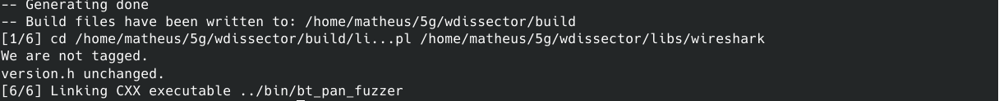
You can even run the generated bt_pan_fuzzer by running sudo bin/bt_pan_fuzzer --help. You should get a help message on the terminal. This is your BNEP protocol fuzzer executable and from now on, any changes to this fuzzer, means modifying src/bt_pan_fuzzer.cpp or its configuration file which will be discussed later.
# 3) Creating a BT Protocol Stack Program
Now that we have created a Fuzzer Executable, we need to create a Protocol Stack Program. The difference between both is that the Fuzzer Executable only modifies packets coming out of the Interface Driver, but it's the Protocol Stack Program that starts and handles the communication with the protocol intended to be fuzzed. For our BNEP protocol Fuzzer, we need to add a new program code to the folder src/programs/bluetooth.
We can rely on an existing BT program code example on the Bluekitchen stack called pan_lwip_http_server.c (opens new window). Gladly, wdissector has such example file, which we can import into the framework as follows:
cp 3rd-party/btstack/example/pan_lwip_http_server.c src/programs/bluetooth/pan_lwip_http_server.c
Similar to step 2), we need to tell our framework how to compile a new program in CMakeLists.txt. Run the following command to append the path of our new program to the BT_PROGRAMS list on CMakeLists.txt.
sed -i '/spp_counter.c/a ${PROJECT_SOURCE_DIR}/src/programs/bluetooth/pan_lwip_http_server.c' CMakeLists.txt
This will add the following line in CMakeLists.txt.
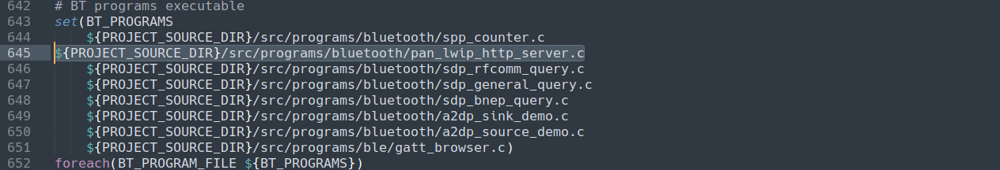
Next, we can compile our new PAN program as follows:
ninja -C build pan_lwip_http_server
If compilation is OK, you should see the program on bin/pan_lwip_http_server.
WARNING
This step may be optional for different combination of Interface Driver and protocol to be added. For example, you don't need to make WDissector framework compile the stack from scratch if you compiled it beforehand using a different method. You can instead pass directly to the fuzzer main code the path of the protocol stack binary so the fuzzer can start/restart it during the fuzzing session.
# 4) Configuring and Testing a Protocol Stack Program
Now, after we have a executable for our Protocol Stack Program from Step 3) that is located at bin/pan_lwip_http_server, we need to tell our fuzzer configuration file to start this program before fuzzing. To this end, we modify the parameters of our configuration file configs/bt_pan_config.json as follows:
- Disable "PacketRetry" (false), "GlobalTimeout" and "LoopDetection" - Our PAN program is a server and we don't want it to retry packets (PacketRetry) to the client. As for
"GlobalTimeout"we set it to an extreme high value as we don't want to disconnect the client upon timeouts that may occur during our new protocol tests. Lastly, we also disableLoopDetectionto not disconnect the client in case it send us multiple re-transmitted packets. - Disable "enable_duplication", "enable_mutation" and "enable_optimization" (false) - We don't want our fuzzer to do fuzz or inject any packet yet. For now we are just testing the execution of our Protocol Stack Program through our Interface Driver, therefore we need to disable any fuzzing related parameter.
- Add pan_lwip_http_server program to "DefaultPrograms" - Here we add the path of our BT program to the list of default programs that the fuzzer can execute during startup. Add
"pan_lwip_http_server"to the first item in the list and set parameter"Program": 0so the fuzzer starts our BT program. This step is crucial because theProgramparameter selects the our program by its index in"DefaultPrograms"list, which is 0 for the first entry.
All of the above modifications can be quickly done by running the following commands:
# Disable "PacketRetry", "GlobalTimeout" and "LoopDetection" \
sed -i 's|"PacketRetry": true|"PacketRetry": false|g' configs/bt_pan_config.json && \
sed -i 's|"GlobalTimeout": 45|"GlobalTimeout": 9999|g' configs/bt_pan_config.json && \
sed -i 's|"LoopDetection": true|"LoopDetection": false|g' configs/bt_pan_config.json && \
# Disable "enable_duplication",.... \
sed -i 's|"enable_duplication": true|"enable_duplication": false|g' configs/bt_pan_config.json && \
sed -i 's|"enable_mutation": true|"enable_mutation": false|g' configs/bt_pan_config.json && \
sed -i 's|"enable_optimization": true|"enable_optimization": false|g' configs/bt_pan_config.json && \
# Add pan_lwip_http_server \
sed -i '/spp_counter/i "bin/pan_lwip_http_server",' configs/bt_pan_config.json && \
sed -i 's|"Program": 1|"Program": 0|g' configs/bt_pan_config.json
Next, we need to add a state machine model to our protocol. Since we don't have one yet, we copy an existent one just to test our protocol. The fuzzer won't use it for anything yet, but we need to provide a dummy one otherwise the fuzzer may hang during startup. The name of this dummy model must be the same as of our stack program (pan_lwip_http_server), but with *.json extension. You can create a dummy model as follows:
cp configs/models/bt/sdp_rfcomm_query.json configs/models/bt/pan_lwip_http_server.json
Finally, we can test our new Protocol Stack Program - Connect ESP32-WROVER-KIT-VE to your computer and start the fuzzer executable as follows:
sudo bin/bt_pan_fuzzer --no-gui --host-port=/dev/ttyUSB1 --autostart
If the ESP32 board is correctly connected at /dev/ttyUSB1. You should see the following output on the terminal:
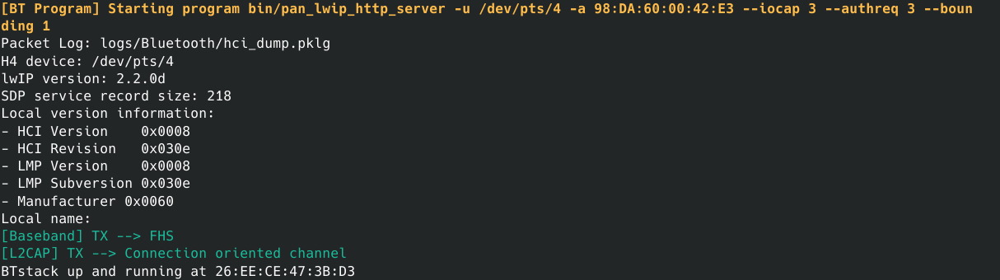
Such indicates that the new BT PAN program is running.
We can now test if communication is working by connecting from our smartphone to the PAN server with the BDAddress indicated in the terminal:
- Disable Wi-Fi on your Smartphone and go to the Bluetooth scanning screen. You should see the device "PAN HTTP XX:XX:XX:XX:XX:XX" listed as below:
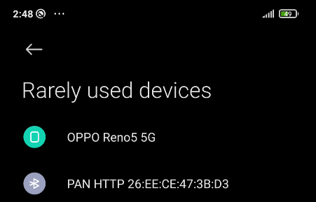
- Go to the BT device list, access PAN HTTP device details or options and enable "Internet Access":
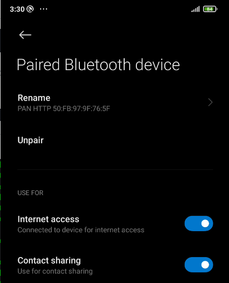
- At this point, if internet access was enabled, it means that your phone is already communicating with internet via PAN and the protocol program was successfully created and configured. To confirm this you can also take a look on the fuzzer terminal. It should show many messages excanges, indicating now TCP/IP/DNS:
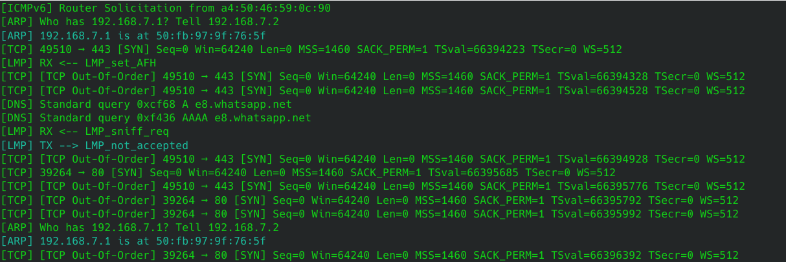
- You can now close the fuzzer with Ctrl-C and open the capture file that was saved on
logs/Bluetooth_PAN/capture_bluetooth.pcapng. The capture file should appear many BT Exchanges alongside IP packets such as shown below:
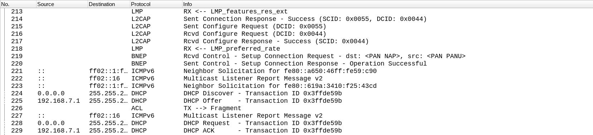
# 5) Analysing Protocol Capture and Creating State Mapping Rules
Now that we have a (1) working Protocol Stack Program and a (2) Fuzzing Executable which can communicate with a target via a Interface Driver, we can proceed to create a simple reference protocol model for our fuzzing.
To this end, note that we will use the capture file obtained from Step 4). If you didn't complete last step but would like to try the reference model generation, you can use the example file located at examples/wdmapper/capture_bt_pan.pcapng.
First, we need to create some rules (Mapping Rules) on how to identify our protocol in the packet exchanges. To this end, open the capture file
logs/Bluetooth_PAN/capture_bluetooth.pcapngfrom Step 4) and apply the filter btbnep in the Wireshark filter text-box to facilitate our analysis of the BNEP protocol. You can alternatively right click the protocol layer on the Wireshark tree view and select "Apply as Filter". This will only show packets that contain BNEP header, which is used in the PAN profile.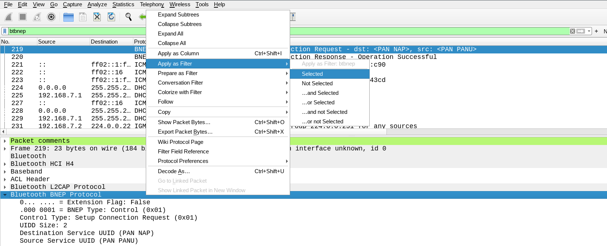
Next, after filtering only BNEP packets, it's important to located which field in the BNEP header corresponds to its packet type. Because BNEP protocol adds just a single header and has few fields, it's easy to locate a field called Control Type in Wireshark. We can see that our second packet is listed as Setup Connection Response in the Control Type field.
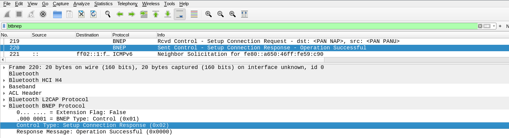
This Control type field is what we want since it identifies the type of BNEP packet and thus can be used for state mapping. However, if we do a quick search on BNEP packet header structure, we see that the Control Type field only exists if the BNEP Type field is (0x01). Otherwise, if BNEP Type is 0x02, the Control Type field is not present.
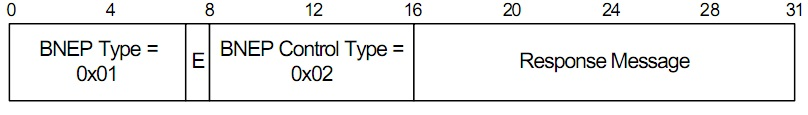
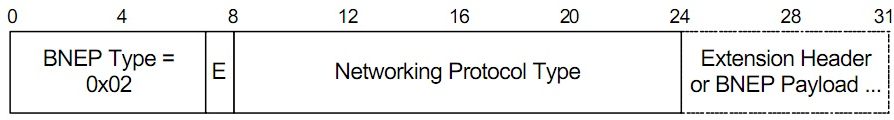
Therefore, we need to somewhat use both fields (BNEP Type and Control Type fields for our state mapping). The good thing is that it's easy to do so in our state mapping configuration file.
Now that we have some clue that we need to use both BNEP Type and Control Type fields, we fist need to know what is their reference name in wireshark so we can add them to our fuzzing configuration file (bt_pan_config.json) for state mapping. We can get the reference name of such field by right clicking them on Wireshark tree view and selecting "Copy->Field Name" as illustrated below:
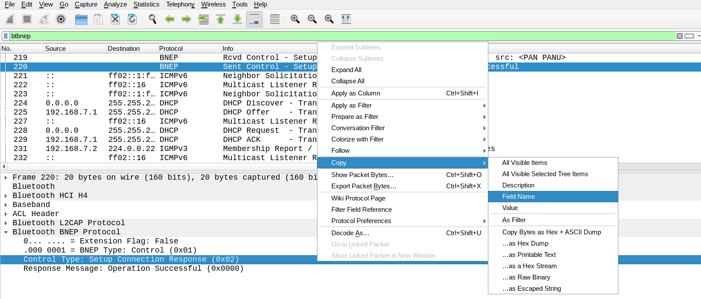
Doing this with both BNEP Type and Control Type fields, we can get the reference names "btbnep.bnep_type" for BNEP Type and "btbnep.control_type" for Control Type.Now that we know the reference names for our type fields ("btbnep.bnep_type" and "btbnep.control_type"), we need to add them to our fuzzer configuration file
bt_pan_config.json. Next, openbt_pan_config.jsonwith a text editor and write the following in the "Mapping" property:
"Mapping": [ { "Filter": "btbnep", "LayerName": "BNEP", "StateNameField": [ "btbnep.control_type", "btbnep.bnep_type" ], "AppendSummary": false, } ],Note that there is some parameters that is worth mentioning here:
- Filter - This parameters indicates to the State mapper what is the protocol, within a packet, that we want to filter. If a packet contains the protocol indicated by this filter, then the mapper checks if any "StateNameField" exists in the packet and label this packet layer with "LayerName" parameter. In this example, we use the same filter we have used in the start of this step to filter BNEP packets in Wireshark (i.e., "btbnep").
- LayerName - Arbitrary name for the protocol matching the "Filter" parameter. In this example we use "BNEP" because this is the protocol we are interested in mapping. In reality you can use any name for this parameter.
- StateNameField - This is the most important parameter and is the one that tells the mapper what fields to use to classify the packet in a state. In this step, we have identified "btbnep.control_type" and "btbnep.bnep_type" as the StateNameFields.
- AppendSummary - Not used here. It's useful when refining the state machine, in case the packet type alone does not return meaningful strings to identify a state. In such case we can add the Info Column of Wireshark (packet summary) as the label for the packet. In most cases you can leave this option as
false.
A summary of how all those parameters relate to our chosen protocol is illustrated below:
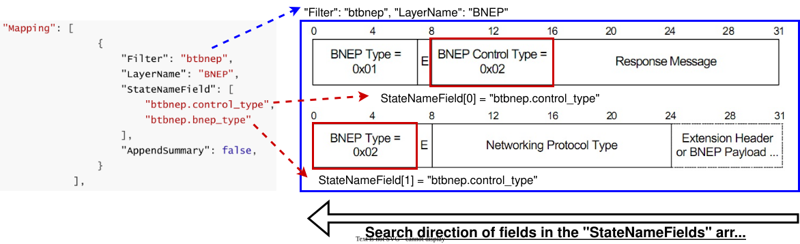
Note that the order of the fields inside the StateNameField array is important. Since the State Mapper stops the field search on the first match, the StateNameField should contain fields that are positioned from right (end) to left (start) in the protocol bytes. Simply put, you can look on Wireshark what field is the last and place it on the first position of the StateNameField array. This restriction may be a bit hard to grasp at first glance, but this field ordering issue can be better understood when visualising the created state machine model.
# 6) Creating a Reference Model File by Running State Mapper
- Finally, we can generate and visualise the model by using the State Mapper (wdmapper). wdmapper receives few arguments: It requires as input the pcapng capture file (-i); the fuzzer configuration file (-c) and output the state model (-o). More details on each argument can be found by running help:
bin/wdmapper --help. In short, we can run the following command to generate the protocol state machine model:
# Generate image
bin/wdmapper -i logs/Bluetooth_PAN/capture_bluetooth.pcapng -c configs/bt_pan_config.json -o model_map.png
# Generate json (required)
bin/wdmapper -i logs/Bluetooth_PAN/capture_bluetooth.pcapng -c configs/bt_pan_config.json -o model_map.json
The first command is to generate a figure in .png format, while the second (.json) generates the actual model which is used by the fuzzer.
If the mapper is successful, the figure of the state machine model_map.png is created at your current working directory, which should be wdissector root folder:
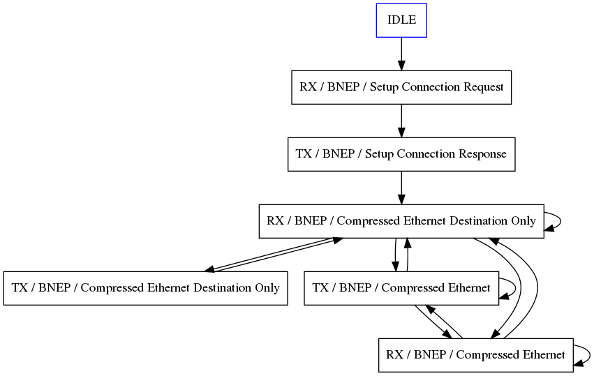
By visually inspecting the generated state machine model and comparing with our original capture file on Wireshark from Step 5), we can confirm that the above model looks OK as the BNEP protocol header is simple. Nevertheless, it's recommended to always review the model graph to ensure that the fuzzer will not miss any relevant states during fuzzing. If there is any state missing, it's adivisable to go back to Step 5) to fix the mapping rules.
A common mistake that could happen at this step is to write the "StateNameField" in the wrong order. An example of this issue is shown below:
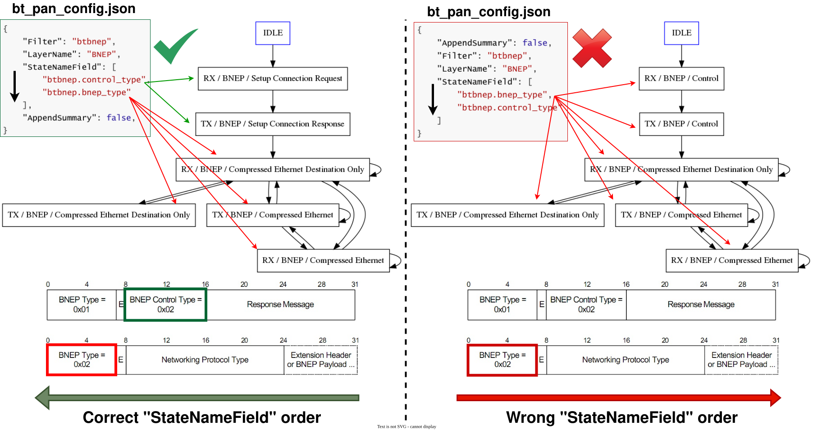
In the Figure above, it's possible to see how the order of field references in "StateNameField" affects the reference model generation. On the left side, the mapper correctly matches the Control Type before BNEP Type and can label the first two states as Setup Connection Request and Setup Connection Response. On the other hand, the right side makes the mapper label the first two state as Control since it matches all packets with the BNEP Type, therefore, missing information on what specific control packet it's being exchanged during BNEP communication.
- If the model looks fine as mentioned before, copy the .json model to the correct folder so our BNEP fuzzer can load our new model during startup. Previously in Step 4), we had copied a dummy pan_lwip_http_server.json model for our protocol tests, but now we are inserting the correct model by copying our generated model
model_map.jsontoconfigs/models/bt/pan_lwip_http_server.json:
cp model_map.json configs/models/bt/pan_lwip_http_server.json
WARNING
For this example we have only used one capture file to create the model. For other more complex protocols, it's advisable to generate more sample captures from target devices to ensure robustness of the state machine model.
# 7) Configuring and Running our new Fuzzer
Now, we are almost ready to start fuzzing our new protocol target, but there is still some fuzzing-related changes to be made on our configuration file configs/bt_pan_config.json:
Allow fuzzing only BNEP packets (using btbnep filter).
Adjust Packet Layer Fuzzing Offset ("PacketLayerOffset") in configs/bt_pan_config.json and src/bt_pan_fuzzer.
Enable fuzzing modes ("enable_*") in configs/bt_pan_config.json.
# Adjust Packet Layer Fuzzing Offset "PacketLayerOffset" \
sed -i 's|"PacketLayerOffset": 1|"PacketLayerOffset": 4|g' configs/bt_pan_config.json && \
sed -i 's|packet_navigate_cpp(2, 1,|packet_navigate_cpp(5, 0,|g' src/bt_pan_fuzzer.cpp && \
# Enable fuzzing modes \
sed -i 's|"enable_duplication": false|"enable_duplication": true|g' configs/bt_pan_config.json && \
sed -i 's|"enable_mutation": false|"enable_mutation": true|g' configs/bt_pan_config.json && \
sed -i 's|"enable_optimization": false|"enable_optimization": true|g' configs/bt_pan_config.json
# Allow fuzzing only BNEP packets
The fuzzer needs to exclude any packet that does not contain BNEP protocol. To this end, we simply need to write the following Exclusion rule to the "Excludes" property in configs/bt_pan_config.json:
"Excludes": [{
"ApplyTo": "A",
"Description": "Ignore non BNEP packets",
"Filter": "!btbnep"
}],
Note that the exclusion parameter "Filter" uses the same sintax of wireshark filter (epan dfilter). Therefore, if you are unsure what to write in this field, simply add a exclamation (!) in the front of the filter name that only shows packet of your target protocol. In our case, we are using btbnep for BNEP protocol, so the exclusion filter becomes the negation: !btbnep. In other words: Exclude from fuzzing all packets that do not contain BNEP protocol.
# Adjusting the Packet Layer Fuzzing Offset (PacketLayerOffset)
We need tell the fuzzer where is the initial protocol layer to start fuzzing a packet. Because BNEP Protocol is encapsulated by other protocol such as LMP, L2CAP, we need to fuzz bytes that BNEP is located further in the transmitted packet bytes. This is because our Interface Driver intercepts the full over-the-air packet and not just partial protocols PDUs.
To understand such offset, we need to go back to our saved protocol capture that we have analysed in Step 5) and open the capture file logs/Bluetooth_PAN/capture_bluetooth.pcapng. As shown in the Figure below, each protocol layer in the BT Packet Structure corresponds to a "PacketLayerOffset" index. This is highlighted in the Wireshark tree view. Note that the layer Frame in the Wireshark tree view is ignored by the fuzzer so it doesn't have a corresponding PacketLayerOffset.
- Since BNEP is our target protocol, we write "PacketLayerOffset": 4 in the configuration file configs/bt_pan_config.json and modify the source code of our fuzzer executable src/bt_pan_fuzzer.cpp on line 774: Changing the first and second arguments in the function packet_navigate_cpp to (5, 0). The first argument is 5 because it must follow the formula PacketLayerOffset+1. On future updates of the frameworks, these manual modifications of the fuzzer source code are expected to be removed. For now we are manually doing the changes for a new protocol.
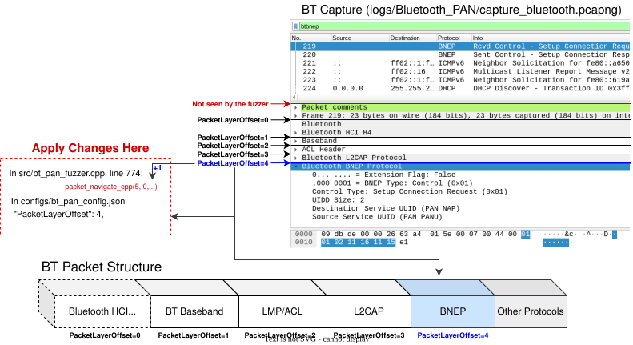
# Enabling Fuzzing modes
On Step 4 we have disabled the parameters enable_* to test our protocol communication, but now we intend to finally start the fuzzer executable with the actual packet fuzzing enabled. As a reminder, the parameters that we are enabling are:
- enable_mutation - Enable packet fields mutation;
- enable_duplication - Enable sending packets out of order (duplication);
- enable_optimization - Enable fuzzing optimization. This is intended to improve the packet mutation process. This parameter only works if
enable_mutationistrue.
# Running the fuzzer
Compile our fuzzer executable to make sure our changes in src/bt_pan_fuzzer.cpp were commited.
ninja -C build bt_pan_fuzzer
Then finally run our fuzzer as shown below:
sudo bin/bt_pan_fuzzer --no-gui --host-port=/dev/ttyUSB1 --autostart
You will need to connect to the BNEP fuzzer via your phone. After repeating the testing methods discussed in Step 4, You should be able to see on the terminal purple messages indicating that a transmitted packet has been fuzzed such as shown below:
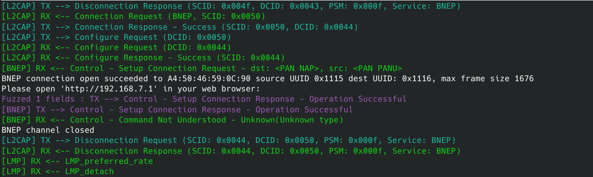
Additionally, you can also take a look on the saved captured file at logs/Bluetooth_PAN/capture_bluetooth.pcapng. During experimentation, by enabling and disabling the "Internet Access" checkbox on the Bluetooth device screen, it's possible to repeat multiple BNEP re-connections. After such connection retries, it's possible to get the initial BNEP configuration packets to be mutated as shown in the Figure below. In this case, the BNEP Type fields has been mutated to 0x12, which is an invalid value. On the phone, it's noticeable that the BNEP "Internet Access" checkbox is greyed-out, indicating some connection problem. Certainly this is exactly the sort of behaviour that we expect from the client (Android) during fuzzing!
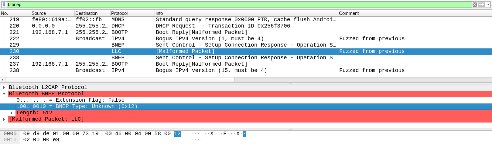
WARNING
As a final note, if you are not getting much packets to be fuzzed during your BNEP reconnections, try to disable optimization on the configuration file (enable_optimization: false) and increase the value of parameters "DefaultMutationFieldProbability" and "DefaultDuplicationProbability" to 0.5 for example. This forces the fuzzer to use the same random chance to fuzz all BNEP packets. With 0.5 (50%) of mutation chance, certainly you can get the initial BNEP packets to be fuzzed within 1-2 reconnections.
# Discussion
This concludes this tutorial on creating a new protocol from scratch using wdissector. There are some other aspects to the framework which was not discussed here such as device monitoring, protocol stack program auto-restart and Interface Driver API and usage. Hopefully we will add more tutorials as the framework evolves.
# * Adding new server API events
Adding new events to the server requires changing the fuzzer code to register new function to corresponding events. The following code example below shows how to use src/PythonServer.hpp C++ library to easily add callbacks to events and get parameters sent from clients. Note the function RegisterEventCallback requires a string as the event name and a function pointer as callback. The example uses lambda expression to allow us to declare the callback as the argument itself.
WARNING
While C++ SocketIO event callbacks are busy, the main Python interpreter is blocked due to the Global Interpreter Lock (GIL). As such, do not place any time consuming code inside such C++ events. Otherwise, background Python threads will not work as expected or freeze while C++ code is being executed.
#include <iostream>
#include <string>
#include "server/SocketIOServer.hpp"
using namespace std;
SockerIOServer Server; // Server Instance
// Initialize Python Runtime
if (PythonCore.init())
{
if (Server.init("0.0.0.0", 3000)) // Server starts here on port 3000
{
cout << Server.TAG << "Server at " << Server.listen_address << ":" << Server.port << endl;
// Register callback to client connection or disconnection
Server.OnConnectionChange([](bool connection) {
if (connection)
cout << Server.TAG, "Remote Client Connected" << endl;
else
cout << Server.TAG, "Remote Client Disconnected" << endl;
});
// Example 1: No arguments (simply do not use "args")
Server.RegisterEventCallback("Example1", [&](py::list args) {
// Perform action to event "Example1" requested by some client
});
// Example 2: Read arguments (convert first argument to string from "args")
Server.RegisterEventCallback("Example2", [&](py::list args) {
if (args.size() > 0)
{ // Convert first argument from arguments array "args" to string
string config_string = args[0].cast<string>();
// Do something ...
}
});
// Example 3: Return something back to the client
Server.RegisterEventCallback("Example3", [&](py::list args) -> string {
// Do something ...
return "Hello back"
});
}
else
{
GL1R(Server.TAG, "Server failed to initialize");
}
}